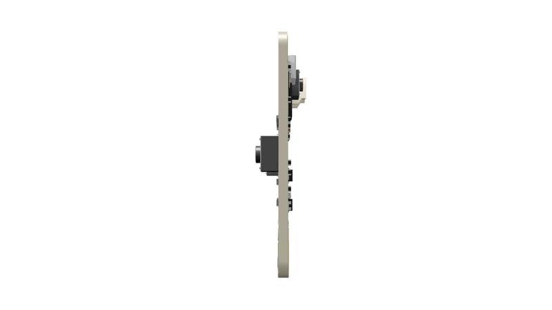

Micro:bit es una pequeña placa diseñada por la BBC para aprender robótica en escuelas, es fácil de conectar y programar y tiene varios sensores y actuadores incorporados.
La placa Micro:bit es muy versátil, ya que podemos programarla desde un ordenador (Sin importar el sistema operativo) o desde una tablet o teléfono móvil.
Si vamos a utilizar el ordenador, necesitaremos un cable USB para conectarlo a la placa. Cuando conectas la placa, aparecerá en el ordenador como una memoria USB llamada MICROBIT.
Cuando creamos un programa, podemos descargar el archivo del programa al ordenador y posteriormente, arrastrarlo desde la carpeta "Descargas" a la unidad MICROBIT, lo que hará que se empiece a ejecutar en la Micro:Bit en cuanto la encendamos.